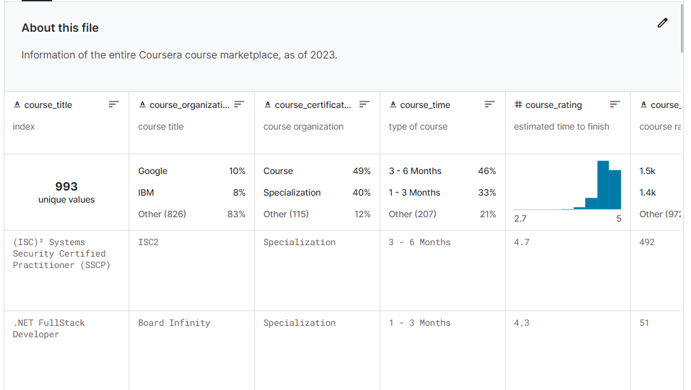

- Why are Coursera data interesting?
- Drawbacks of this dataset
- Challenges while scraping the data
- Conclusion
Why are Coursera data interesting?

There could be a number of reasons.
From a data analysis perspective, Coursera course data are comprehensive. It contains data with a variety of types and meanings, including structured data like:
- course title
- course orgnatization
- course rating and # of reviews
- number of students enrolled
Tag data like skills you’ll gain through the course, and unstructured, text data:
- course summary bullet points, and
- paragrahs of course descriptions
Looks like a gold mine for rating & popularity prediction, topic extraction and prediction! The techniques and methods you could learn and practice on this dataset are endless.
I’m glad of this end result, but actually I was initially interested in Coursera data because I was itching to analyze and learn from datasets, and was interested in Coursera data because I personally use Coursera myself. One such dataset exist in Kaggle but was outdated, so I decided to re-scrape the data.
A month after I published the dataset, there’s been 766 downloads, 33 upvotes, and 10 notebooks!
Morale of the story – let your interest guide you, and you’ll find interesting topics and resources that will interest other people as well!
Drawbacks of this dataset
When I first scraped the dataset, I talked about it in a discord chat with other data friends.
I mentioned that I only got 1000 rows of data while the search result says there are ~12,700 courses. My friend suggested that it might be Coursera’s way to limit the number of items so that they don’t overwhelm the browser.
This seems extremely true, because when I apply filters sequentially I got more results.
The conclusion is that Coursera returned top 1000 courses, but hided the rest, so my dataset is not actually the entire Coursera’s course database, despite that it might be a good sample of it.
Based on this observation, my future step is to add filters to the request url and loop through all filters to scrape all courses. The current dataset is interesting, but could be improved upon.
Challenges while scraping the data
I had the most challenge using selenium to scrape the skills section of the course page.
Previous dataset I found on Kaggle doesn’t have information on the course page. To scrape # students enrolled for a course, I need to request the course page, instead of simply using the marketplace page.
Since I’m already clicking into the course page, I added more fields into the dataframe, including skills you’ll gain for a course. The problem is, some of these sections have a lot of skill tags, so just using beautifulsoup isn’t enough if I want to get the complete and accurate information.
To solve this, I need to use selenium to click and expand the section. That means I need to use selenium to load the page source code insead of beautifulsoup, and this is where the problem begins.
Using beautifulsoup, we’re garanteed to get the latest source code, while selenium could end up getting any version of the older source code which is unpredictable and doesn’t match our tag or classname element search.
To get the newest code, I tried various different waiting strategies, and none of them worked. Whether it’s implicit wait, explicit wait, or wait till an element is visible.
I searched the web frantically. There has to be a solution. In the end, I stumbled upon a post that says you can execute a JS code snippet that fetches an element using selenium, create a function to check if the element is the one, and pass that to selenium’s “wait until” function.
I tried it out, and it worked most of the time. I ended up looping until the ones that didn’t work initially works on multiple tries.
I was exausted and left the code for almost a week. When I finally came back and tried to build my dataset correctly, the code timed out on all of the course pages! That means it couldn’t find the element for all pages, even though it worked before.
In the end, I discovered that the code selenium scraped, though different from browser inspection code, still contains accurate information (same as the ones desplayed in browser). As a result, I updated the scraping code to the selenium source code, and finally scraped the accurate and updated information of skills gained from course.
Here is the full code:
js_code1 = 'return document.getElementById("about").getElementsByClassName("css-mzc3kb");'
js_code2 = 'return document.getElementById("about").getElementsByClassName("css-is1tpd")[0].getElementsByTagName("h2")[0].innerHTML;'
condition1 = lambda driver: driver.execute_script(js_code1) != []
condition2 = lambda driver: driver.execute_script(js_code2) == "Skills you'll gain"
try:
driver.get(course_href)
WebDriverWait(driver, 5).until(EC.all_of(condition1, condition2)) # "wait until" function
except:
print(f"{course_href}: timed out")
return []
# find the list of skill tags
element = driver.find_element(By.CLASS_NAME, "css-yk0mzy")
li = element.find_elements(By.TAG_NAME, "li")
# if there is an option to expand the section
if li[-1].get_attribute("text") == "View all skills":
button = li[-1].click() # click to expand the skills section
time.sleep(10) # making sure that the section fully expand
js_code = 'return document.getElementById("about");'
# finally get the full html code
html_code = driver.execute_script(js_code).get_attribute("innerHTML")
This time, the code works 100% of the time! 🥳
Conclusion
This whole process took way longer than I expected. It shows that even though providing clean and accurate data seem easy, it’s not an easy job at all. In the end though, it feels so good to see people actually utilizing my code to do interesting things!